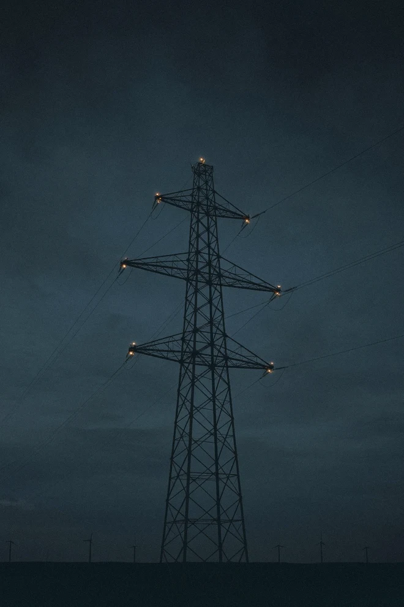
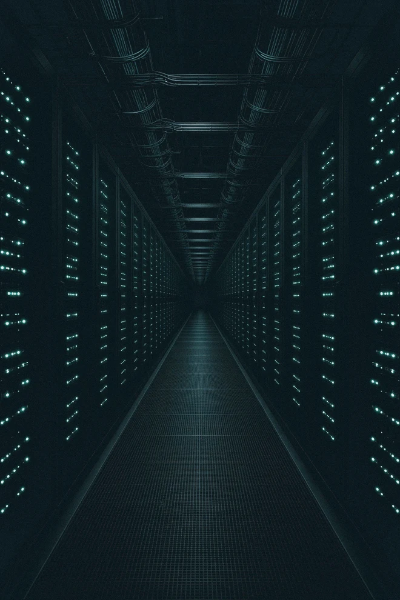

AI står i kø.
Ikke for chips, men for strøm.
En chip kan sendes med fly, og et datacenter kan bygges på et par år. Men strømmen til det skal produceres, transporteres og tilsluttes, og der er køen lang. Følg strømmen baglæns fra serveren til brændslet, og se, hvor den venter, og hvor fondens selskaber står undervejs.

af verdens elforbrug gik til datacentre i 2024. Det svarer til cirka 415 TWh.
af Irlands målte elforbrug gik til datacentre i 2023. I 2015 var det 5 %, og nu er det mere end alle byboliger tilsammen (18 %).
var den gennemsnitlige leveringstid på en krafttransformer i 2024. I 2021 var den cirka 50 uger.
Det globale tal er lille. Det lokale er ikke.
1,5 % lyder ikke af meget. Men datacentre ligger tæt samlet. Ifølge IEA ligger næsten halvdelen af den amerikanske datacenterkapacitet i fem regionale klynger. Det er derfor, flaskehalsen opstår lokalt: i én transformerstation, ved én netforbindelse og i én kø.
Samme tidsakse for alle fire søjler. Kilder: Wood Mackenzie (transformere), Lawrence Berkeley National Laboratory, Queued Up 2024 (nettilslutning i USA, typisk projekt).
Gå baglæns fra serveren
Vi starter, hvor strømmen bliver brugt, og går ét led tilbage ad gangen. Ved hver skranke kan du se, hvad der sker, hvor det kan gå i stå, og hvilke af fondens selskaber der står der ifølge fondens egen klassifikation. Procenttallene er positionsvægte i PMINDI pr. 16. oktober 2026.

Datacentret
5 selskaber · 1,66 %
Hvad sker der her?
Her ender rejsen. Næsten al den strøm, serverne bruger, bliver til sidst til varme. Den varme skal køleanlægget fjerne, og køleanlægget bruger også strøm.
Hvor kan det gå i stå?
Bygningen og serverne kan være klar, før nettet er. Nogle anlæg får derfor deres egen strøm ved siden af. To af selskaberne nedenfor har det i deres beskrivelse i fondens data: Iris Energy med „egen strøm“ og Fermi med en „energi- og datacentercampus“.
NDI-selskaber ved denne skranke
Selskaber, der i fondens data hører til datacentre, men har energi som sidespor.
- Iris EnergyBitcoin-miner der omstiller til AI-cloud på egen strøm.
0,65 % - FermiEnergi- og datacentercampus i Texas.
0,30 % - Sumitomo Electric IndustriesKabler, fiber og elnetkomponenter.
0,30 % - Jacobs SolutionsIngeniørdesign af infrastruktur og datacentre.
0,27 % - FlexKontraktproduktion og strøm/køling.
0,14 %
Reservestrøm og batterier
11 selskaber · 3,28 %Hvad sker der her?
Et datacenter kan ikke tåle, at strømmen blinker. Derfor står batterier klar til at tage over på et splitsekund, og generatorer tager over, hvis udfaldet varer længere. Batterier på elnettet kan også gemme sol- og vindstrøm, til den skal bruges.
Hvor kan det gå i stå?
Lagring afhænger af batterikemi, materialer og fabrikker, og meget af teknologien i denne gruppe er stadig ved at blive bygget op.
NDI-selskaber ved denne skranke
- EnovixSilicium-anode lithium-ion-batterier.
0,63 % - Fluence EnergyBatterilagring til elnettet.
0,53 % - GeneracGeneratorer og reservestrøm, også til datacentre.
0,51 % - SES AILithium-metal-batterier og AI til materialeforskning.
0,44 % - QuantumscapeSolid-state-batterier til elbiler.
0,42 % - Solid PowerSolid-state-elektrolytter til batterier.
0,24 % - Amprius TechnologiesBatterier til droner og luftfart.
0,17 % - Eos Energy EnterprisesZinkbatterier til nettet.
0,14 % - ElectrovayaBatterier til industri.
0,09 % - MicrovastBatterier.
0,09 % - NeovoltaBoligbatterier.
0,02 %
Elnettet
7 selskaber · 1,32 %Hvad sker der her?
Højspændingsledninger fører strømmen over lange afstande, og transformerstationer sænker spændingen, før den kan bruges. Et nyt stort forbrug kræver ofte nye ledninger og nye transformere.
Hvor kan det gå i stå?
Her er ventetiden målt. Ifølge Wood Mackenzie steg leveringstiden for en krafttransformer fra cirka 50 uger i 2021 til 120 uger i gennemsnit i 2024. For de største lå den på 80–210 uger.
NDI-selskaber ved denne skranke
- MYR GroupEntreprenør for transmission og eldistribution.
0,52 % - Shoals TechnologiesElektriske systemer til solparker.
0,22 % - Quanta ServicesNetbygning og strøm til datacentre.
0,16 % - ITTPumper og komponenter.
0,13 % - Primoris ServicesInfrastrukturentreprenør.
0,12 % - Tantalus SystemsSmart grid.
0,10 % - TerexMaskiner, forsyningsbiler.
0,07 %
Forsyningsselskabet
9 selskaber · 1,80 %Hvad sker der her?
Forsyningsselskaber ejer kraftværker og net og sælger strømmen videre. De skal sige ja, når et datacenter vil tilsluttes, og de skal planlægge kapaciteten mange år frem.
Hvor kan det gå i stå?
I USA står nye anlæg i kø for at blive koblet på nettet. Ved udgangen af 2023 ventede næsten 2.600 GW i køerne. Et typisk projekt, der blev bygget i 2023, brugte knap fem år fra ansøgning til drift (Berkeley Lab).
NDI-selskaber ved denne skranke
- VistraElproducent med gas- og kernekraft.
0,31 % - NextEra EnergyElforsyning og sol/vind.
0,24 % - Talen EnergyKernekraft og strøm til datacentre.
0,24 % - DTE EnergyForsyningsselskab.
0,20 % - CMS EnergyForsyningsselskab.
0,19 % - American Electric PowerForsyning og transmission.
0,18 % - FirstEnergyForsyning og transmission.
0,18 % - Southern CompanyForsyningsselskab.
0,16 % - Clearway EnergyVedvarende elproduktion.
0,10 %
Kraftværket
30 selskaber · 7,45 %Hvad sker der her?
Strømmen skal laves et sted: i gasturbiner og motorer, i brændselsceller, i solcelleparker eller i kernekraftværker. Fondens data deler produktionen i tre grupper.
Hvor kan det gå i stå?
Hver teknologi har sin egen flaskehals. Gasværker skal have turbiner og brændsel, solparker skal have plads i nettet, og nye reaktortyper skal godkendes. Kun 14 % af den kapacitet, der søgte om nettilslutning i USA fra 2000 til 2018, var bygget ved udgangen af 2023 (Berkeley Lab).
NDI-selskaber ved denne skranke
Gas, motorer og brændselsceller 13 selskaber · 3,12 % af fonden
- Babcock & WilcoxKedler og kraftværksteknologi, også til strøm til datacentre.
0,87 % - Power Solutions InternationalMotorer og strømsystemer, bl.a. til datacentre.
0,43 % - Ballard Power SystemsBrændselsceller med brint.
0,33 % - ErockGasbaseret lokal strøm til datacentre.
0,27 % - Rolls-RoyceFlymotorer, strømsystemer og SMR.
0,25 % - Bloom EnergyBrændselsceller til datacentre.
0,21 % - GE VernovaGasturbiner, vind og elnet.
0,19 % - FluorIngeniør og byggeri, ejer i NuScale.
0,11 % - Plug PowerBrint og elektrolyse.
0,11 % - FlowservePumper, ventiler.
0,10 % - Solaris Energy InfrastructurMobil strøm til datacentre.
0,10 % - CaterpillarMaskiner og gasgeneratorer.
0,08 % - CumminsMotorer og generatorer.
0,07 %
Sol 9 selskaber · 3,42 % af fonden
- T1 EnergyProduktion af solcellemoduler i USA.
0,77 % - Solaredge TechnologiesInvertere og strømoptimering til solceller.
0,56 % - Enphase EnergyMikroinvertere og batterier til solceller.
0,40 % - First SolarTyndfilms-solcellemoduler.
0,39 % - SunrunSolceller og batterier til boliger.
0,36 % - Tigo EnergySikkerhed og optimering til solceller.
0,34 % - NextrackerSolcelle-trackere.
0,23 % - Canadian SolarSolcellemoduler og batterilagring.
0,20 % - Array TechnologiesSolcelle-trackere.
0,17 %
Kernekraft 8 selskaber · 0,91 % af fonden
- BWX TechnologiesKernekraftkomponenter og brændsel.
0,19 % - OkloSmå reaktorer til datacentre.
0,17 % - Nano Nuclear EnergyMikroreaktorer.
0,15 % - Mirion TechnologiesStrålingsmåling.
0,12 % - Nuscale PowerSMR.
0,10 % - LightbridgeKernebrændsel.
0,08 % - Terra Innovatum GlobalMikroreaktorer.
0,05 % - Terrestrial EnergySmeltesaltreaktorer.
0,05 %
Brændslet
12 selskaber · 3,11 %Hvad sker der her?
Bagest i køen ligger råvaren: naturgas, der skal hentes op og sendes i rør, og uran, der skal beriges, før det kan bruges i en reaktor.
Hvor kan det gå i stå?
Brændsel er en egen forsyningskæde med boring, rørledninger og berigelse. Det er en del af energihistorien, som er let at overse.
NDI-selskaber ved denne skranke
- Expand EnergyStor amerikansk naturgasproducent.
0,66 % - Comstock ResourcesNaturgasproducent (Haynesville).
0,52 % - Propetro HoldingServiceydelser til olie- og gasboring.
0,32 % - Antero ResourcesNaturgasproducent.
0,29 % - ASP IsotopesIsotopberigelse til kernekraft og medicin.
0,22 % - Kinder MorganGasrørledninger.
0,22 % - Vista EnergyOlie og gas i Argentina.
0,20 % - Centrus EnergyUranberigelse og HALEU.
0,18 % - EQTNaturgasproducent.
0,17 % - Atlas Energy SolutionsFrac-sand og strøm.
0,15 % - Range ResourcesNaturgasproducent.
0,11 % - Canadian Natural ResourcesOlie og gas.
0,07 %
af PMINDI ligger i 69 selskaber på energilinjen
Hvor ligger vægten?
Ingen enkelt skranke dominerer. Vægten er spredt over hele vejen fra brændsel til batteri. Det er en beskrivelse af porteføljen den 16. oktober 2026, ikke et råd om noget som helst.
- Reservestrøm og batterier 3,28 %
- Elnet 1,32 %
- Forsyning 1,80 %
- Gas, motorer, brændselsceller 3,12 %
- Sol 3,42 %
- Kernekraft 0,91 %
- Brændsel 3,11 %
Hvert selskab tælles kun ved sin hovedskranke. Selskaber, hvor energi kun er et sidespor (fx Tesla), er ikke med i de 16,96 %. De fem ved datacentret er heller ikke med.
Tre spørgsmål, der er værd at stille
Når du læser om et energiselskab, kan disse spørgsmål hjælpe dig med at skelne en overskrift fra en forretning.
- Hvornår bliver ordren til en leverance og en betaling? En ordre på en turbine er ikke det samme som indtægt fra et færdigt kraftværk.
- Hvem bærer risikoen for dyrere materialer og forsinkelser?
- Er efterspørgslen knyttet til ét projekt eller mange kunder?